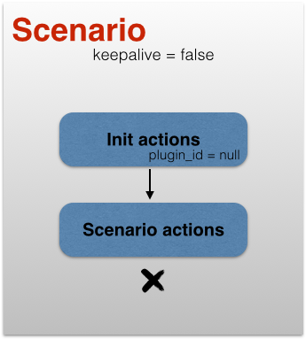
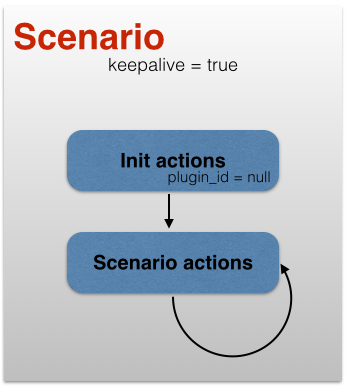
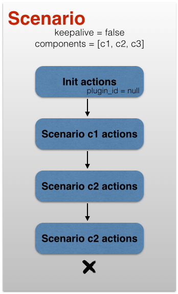
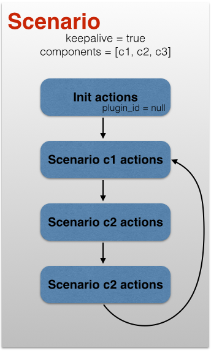

Test specification
This chapter describes the JSON test specification supported by Megaload. Objects describing the test, phases, scenarios and plugins can be uploaded in separate files. The system will validate that all required configuration is present when starting the load test.
Test
The test object contains the major elements of a Megaload test.
| Name | Type | Required | Action | Info |
|---|---|---|---|---|
id |
string | Yes | No | Unique test identifier. |
phases |
ne¹-list of strings | Yes | No | List of phase identifiers. These phases must be loaded in the system before starting the test. |
plugins |
list of strings | Yes | No | List of plugin identifiers. All plugins used during the test must be listed here. |
global_options |
ne-list of global options | No | No | Global test options that can be retrieved internally by any action through all the test. Each option is a JSON object with a single pair key-value. The value must be a basic JSON type: boolean, number or string. |
assertions |
ne-list of assertion objects | No | No | Assertions to check that results match test expectations. |
¹Non-empty
Example
{"test" : {
"id" : "test",
"global_options" : [{"option1" : "abc"},
{"option2" : 4567}]
"phases" : ["phaseOne"],
"plugins" : ["my_web_server"]
}
}
Plugin
The plugin object defines the target server or system under test.
| Name | Type | Required | Action | Info |
|---|---|---|---|---|
id |
string | Yes | No | Unique plugin identifier. |
plugin_info |
object | Yes | No | Plugin specification. See Protocols. |
Example
{"plugin" : {
"id" : "my_web_server",
"plugin_info" : { "http-plugin" : {
"host" : "192.165.0.1",
"port" : 5050,
"ssl" : false
}
}
}
}
Phase
The phase object describes how test scenarios will be executed. A test can contain multiple phases.
| Name | Type | Required | Action | Info |
|---|---|---|---|---|
id |
string | Yes | No | Unique phase identifier. |
arrival_rate |
integer | Yes | No | The number of new worker processes (users) started per second. At the beginning of the phase or scenario, workers processes are started gradually, to avoid a call burst. |
duration |
integer | Yes | No | The total duration of the phase in milliseconds. Scenarios that are not completed in the predefined time are allowed to finish while the new phase starts. This can result in functional scenarios overlapping between phases, but the rate will be controlled by the new phase parameters. |
concurrent_scenarios |
integer | Yes | No | The maximum number of worker processes (concurrent users) that can run in parallel per instance. |
rate |
integer | Yes | No | The target rate of requests per second that the system must reach. |
keepalive |
boolean | No | No | Indicates whether a user must be kept alive between phases. A value of ‘true’ will keep those users running and all the established connections open. If the value is ‘false’, all users will terminate between phases. |
scenarios |
ne-list of objects | Yes | No | A list of the scenarios that must run in this phase with their relative frequency. Frequency is used to randomly choose between scenarios. Each scenario object has a pair {scenario : frequency} |
assertions |
ne-list of assertion objects | No | No | Assertions to check that results match phase expectations. For more information, see Assertions. |
Frequency
In a test specification, a phase consists of one or more scenarios. These scenarios are run in parallel by worker processes until the limit of processes declared in concurrent_scenarios is reached (see Phase). It is not possible to know in advance how many worker processes will be started. There are several reasons for this: the test duration might be too short to reach the concurrent_scenarios limit; the scenarios might not be set to keepalive, so that a new worker is started once a scenario is finished; or a scenario could be aborted, necessitating a new worker. However, the number of scenarios of each kind that is executed can be defined through the property frequency. When a new worker process is about to start, it uses the frequency parameter to make its choice following the random weighted choice algorithm. In this algorithm, the phases with a heavier frequency will be chosen more often.
- Get all scenarios declared on the current phase 𝑆𝑖 . . . 𝑆𝑗
- Create an array with the cumulative frequencies: 𝐴𝑐𝑐 = [𝐹𝑖, 𝐹𝑖 + 𝐹𝑖+1, . . . ∑𝐹𝑖 ]
- Generate a random number in 𝟢 · · · ∑𝐹𝑖
- Select the position 𝑖 where 𝐴𝑐𝑐[𝑖] <= 𝑟𝑎𝑛𝑑𝑜𝑚 and 𝐴𝑐𝑐[𝑖-𝟣] > 𝑟𝑎𝑛𝑑𝑜𝑚
- The selected scenario is 𝑆𝑖.
For this algorithm to work, frequency must be a positive integer greater than 0. There is no requirement for frequencies to sum up to any amount. In the case of compound scenarios (scenarios which contain a list of components), the frequencies of the components are discarded and the frequency of the compound scenario is the one selected for the algorithm.
Example
{"phase" : {
"id" : "phaseOne",
"arrival_rate" : 10,
"duration" : 3000,
"concurrent_scenarios" : 5,
"rate" : 5000,
"scenarios" : [{"scenarioOne" : 1}]
}
}
Scenario
The scenario object contains the actions that comprise a test. Note that actions and components are mutually exclusive: one or the other must be present.
| Name | Type | Required | Action | Info |
|---|---|---|---|---|
id |
string | Yes | No | Unique scenario identifier. |
keepalive |
boolean | No | No | Indicates whether a user must be kept alive between scenario executions. A value of ‘true’ will keep those processes running and all the established connections opened; the init section will be executed only once, when the connection is established. If the value is ‘false’, user instances will be terminated each time the scenario is executed and the connection reopened. |
actions |
ne-list of objects | Yes | No | List of actions that will be executed in sequence in this scenario. See Actions. |
components |
ne-list of strings | Yes | No | List of scenario IDs. You can compose complex scenarios from simple ones, by appending the list of actions to those scenarios. |
init |
ne-list of strings | No | No | List of scenario IDs. An init scenario is a special scenario; it cannot contain more init scenarios. These init scenarios, if any, are executed in sequential order and only once before any other action of the scenario. |
teardown |
ne-list of strings | No | No | List of scenario IDs. These scenarios are executed in sequential order after every scenario has completed, unless the scenario has keepalive flag set to true. They are also executed at the end of a phase regardless of the keepalive flag. |
Init
The init scenarios are executed once at the beginning of the scenario execution. If the scenario is tagged as keepalive, the init scenario is not repeated with the scenario.
 
Any variable stored or state changed during the execution of the init scenario is available during the execution of the main scenario actions. The init scenario can be disrupted in the change of phase; Megaload does not wait for it to be finished before changing the phase.
A basic scenario contains a list of actions that are executed in sequential order. Additionally, Megaload allows the user to generate more complex scenarios by using composition.
There may be an arbitrary number of init scenarios within each scenario, which are executed in sequential order.
Components
A compound scenario does not contain actions but components. The parameter components is a list of scenario identifiers which actions are called in sequencial order in place of actions. All the parameters of the component scenarios, such as keepalive or init, are ignored during the test execution and only the parameters of the compound scenario are used. When the compound scenario has keepalive set to true, the whole sequence of actions is repeated until the phase ends.
 
Example
{"scenario" : {
"id" : "scenario",
"init" : ["init-scenario-1", "init-scenario-2"],
"actions" : [ {"http-request" : {
"plugin_id" : "localhost",
"method" : "GET",
"path" : "/charges",
"headers" : {},
"body" : []
}
}
]
}
}